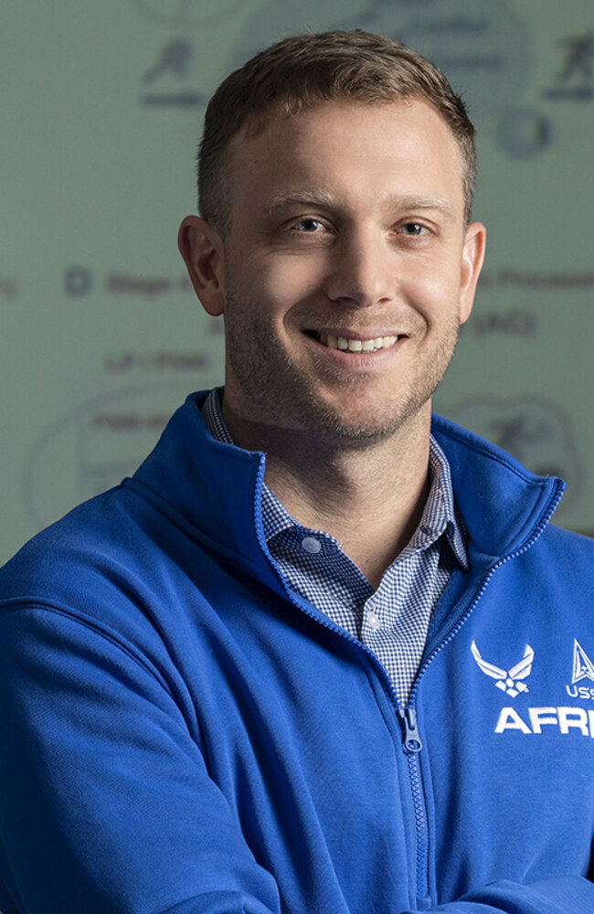

Collective member
Kevin Schmidt
Cognitive neuroscientist · AI research leader
Dr. Kevin D. Schmidt provides near-term operational application of Artificial Intelligence to human performance while translating principles of biological learning and memory to artificial implementations. Dr. Schmidt is an avid rock and mountain climber, which he pursues passionately in parallel to the quest for artificial consciousness.
Research focus
- Consciousness engineering
- Flexible memory
- Brain-inspired AI
- Human-machine teaming
- Cognitive architectures